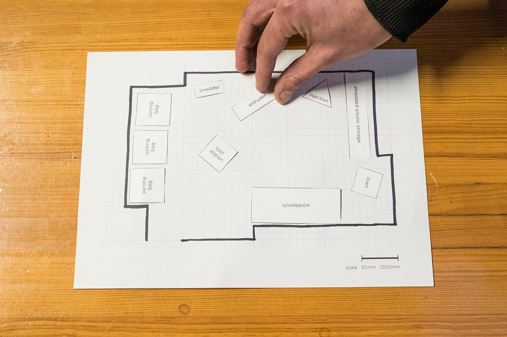
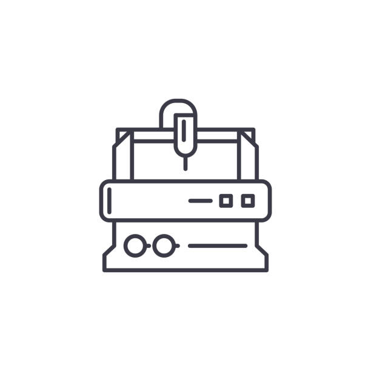

Ruang Kerja
Ruang Kerja Berharga ini adalah tempat untuk memulai dan mendalami pekerjaan CNC anda dan membuat produk-produk berkualitas dari material disekitar.
Anda ingin menyiapkan ruang kerja nyata. Super. Kami akan memandu Anda mempelajari cara belajar tentang ruang cnc, membuat mesin, dan menyiapkan ruang untuk membuat benda-benda produksi dari material logam dll 🤙
Menyiapkan ruang kerja dapat dipecah menjadi tiga langkah utama:
- Cari: apa yang harus dipikirkan saat memilih ruang Anda
- Rencanakan: bagaimana merencanakan ruang Anda secara efektif agar sesuai dengan semua mesin
- Membangun: mengubah ruang kosong menjadi ruang kerja Campuran
Masing-masing langkah ini dijelaskan secara lebih rinci di bawah ini.
🔍 Cari
Langkah pertama menyiapkan ruang kerja Mix adalah menemukan ruang (duh). Saat mencari, ada beberapa pertimbangan yang perlu diingat.
Ukuran: Penting untuk memastikan bahwa Anda memiliki cukup ruang untuk bergerak bebas dengan mesin dan peralatan Anda. Ruang Mix yang kami rancang kira-kira berukuran 5 x 8 meter – Anda bisa lebih besar, tetapi jika Anda menyertakan semua mesin v2 (seperti milik kami), kami tidak akan merekomendasikan untuk menggunakan yang lebih kecil.
Listrik: Mesin Injeksi dan Ekstrusi dapat berjalan dalam satu fase, tetapi penghancur terkadang berjalan dalam tiga fase, jadi pastikan untuk memeriksa spesifikasi motor yang akan Anda gunakan saat memilih ruang Anda.
Anggaran: Sambil memastikan ruang Anda memenuhi kebutuhan fungsional Anda, penting juga untuk diingat bagaimana itu akan sesuai dengan anggaran Anda.
Pro-tip: kadang-kadang, kota menawarkan sewa diskon kepada pengusaha dengan misi yang bertujuan, jadi ada baiknya menghubungi akselerator dan perwakilan kota Anda untuk melihat apakah ada peluang seperti ini di daerah Anda.
✍️ Workspace
Anda telah menemukan ruang Anda. Bagus. Sekarang Anda dapat mulai merencanakan bagaimana Anda akan mengatur elemen ruang kerja Anda sesuai dengan denah unik Anda.
Setiap ruang berbeda, jadi ini adalah kesempatan bagi Anda untuk menyesuaikan tata letak agar sesuai untuk Anda.
Untuk membantu Anda memulai, kami telah menyertakan beberapa denah lantai awal, model CAD, dan perencana lantai khusus, yang dapat Anda gunakan untuk menjelajahi tata letak yang berbeda sebelum menyelami hal yang sebenarnya.

Setelah Anda membuat denah lantai yang tampaknya menjanjikan, ujilah dalam kehidupan nyata dengan memblokirnya di lantai ruang Anda dengan kapur. Lanjutkan untuk mengulangi sampai Anda tiba di denah lantai yang terasa benar.
🛠 Bangun
Sekarang denah lantai Anda terhalang, saatnya mengubah ruangan kosong Anda menjadi ruang kerja Mix..
Mulailah dengan dasar-dasar
Mulailah dengan item Anda yang paling penting - mesin, meja kerja, alat dasar - kemudian bangun dari sana saat Anda mulai melihat apa yang paling sesuai dengan alur kerja Anda.
Jika memungkinkan, cari opsi bekas untuk mengurangi jumlah material dan sumber daya baru yang digunakan untuk memulai ruang Anda. Jika yang Anda butuhkan tidak tersedia bekas, beli baru atau bangun. Dan selalu berusaha untuk kualitas yang baik daripada yang murah.
Beberapa item penting untuk membantu Anda memulai:
- Mesin - tentu saja. Anda bisa mendapatkan semuanya atau mulai dengan kombinasi yang sesuai dengan tujuan ruang kerja Anda.
- Wadah penyimpanan plastik yang sudah diparut - tas berfungsi dengan baik, mungkin bergantung pada cara Anda mengumpulkan plastik.
- Wadah penyimpanan plastik robek – Bisa apa saja. Yang paling penting adalah memastikannya kokoh untuk mencegah tumpahan yang tidak disengaja. Jika Anda memiliki shredder sendiri, ada baiknya menggunakan wadah penyimpanan yang dapat Anda hancurkan kemudian disimpan, sehingga Anda tidak perlu menuangkan plastik robek dari satu wadah ke wadah lainnya – membantu menjaga jenis dan warna tetap murni. Wadah bening bagus, tetapi tidak diperlukan.
- Cetakan sederhana – bisa berupa balok, mangkuk, atau benda lainnya – tergantung pada mesin yang Anda gunakan. Terbaik untuk memulai dengan sesuatu yang sederhana untuk membiasakan diri dengan proses, kemudian membangun dari sana. Lihat cara untuk mendapatkan inspirasi.
- Alat dasar - kunci pas, sendok, palu, pahat, tang pengunci saluran, obeng, kacamata pengaman, dan sarung tangan tahan panas.
- Ventilasi – masker filter, caddy ventilasi, lihat video keselamatan untuk mempelajari lebih lanjut.
- Meja kerja.
Setelah Anda menyiapkan ruang kerja dasar, mulailah bekerja dengan mesin Anda untuk mengembangkan alur kerja Anda dan lihat apa lagi yang dapat membantu Anda bekerja lebih efisien dan nyaman.
Dan jangan takut untuk membumbui tempat dengan pesona unik Anda :) Tanaman, poster, pencahayaan yang tepat, dan boombox akan membuat ruang kerja Anda lebih menyenangkan untuk diri sendiri dan siapa saja yang mampir.
Peran Anda di alam semesta
| ikon Anda | Tugas Anda |
|---|---|
|  | Ruang Kerja Cnc Berharga Ruang kerja adalah tempat di mana material diubah dari dasar menjadi bahan atau produk yang berharga. |
👋 bagikan
Anda telah membangun Workspace Anda. Bagus! Kita semua belajar bersama, jadi pastikan untuk membagikan kembali peretasan atau pengembangan apa pun yang telah membantu Anda meningkatkan ruang Anda selama ini. Nikmati perjalanannya 🙂
Ingin berbagi umpan balik, mengobrol tentang Workspace, atau belajar lebih banyak dari komunitas? Buka saluran NCCommunity Di sini kami memberikan tips tentang pengaturan ruang kerja Anda dan cara menjalankannya.